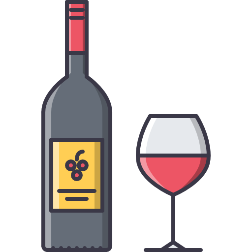

Introducción al mundo del vino
Curso ideal para principiantes que desean descubrir el universo del vino.
¿Qué aprenderás?
- Diferencias entre tipos de vinos: tinto, blanco, rosado y espumoso
- Cómo se produce el vino: proceso desde la uva hasta la botella
- Técnicas básicas de cata y apreciación sensorial
- Cómo conservar y servir adecuadamente un vino
Duración del Curso
4 semanas (1 clase por semana)
Modalidad
100% online - Clases grabadas y material descargable
Incluye
- Certificado de participación
- Material complementario en PDF
Temario del Curso
| Semana | Tema | Contenido |
|---|---|---|
| 1 | Introducción a los vinos | Tipos de vino, historia y proceso de elaboración |
| 2 | Cata básica | Técnicas para degustar y apreciar el vino |
| 3 | Maridaje | Cómo combinar el vino con platos típicos |
| 4 | Servicio del vino | Cómo almacenar y servir profesionalmente |